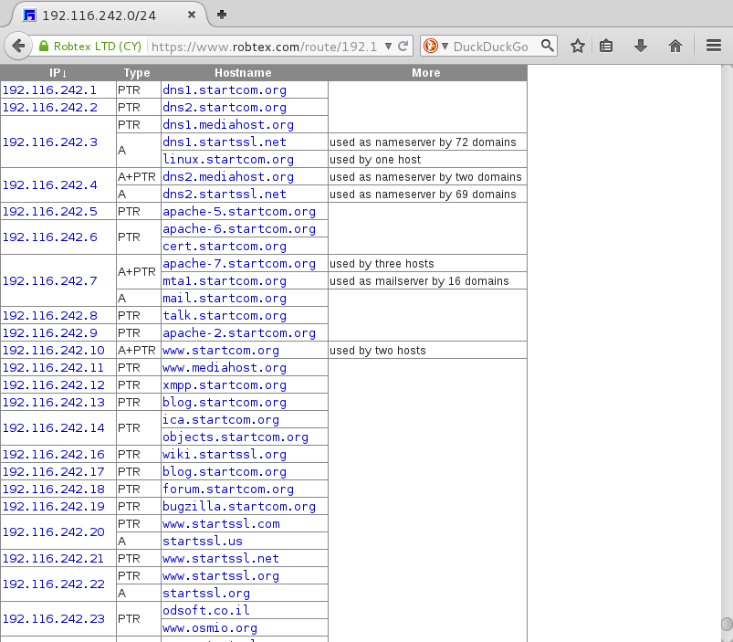
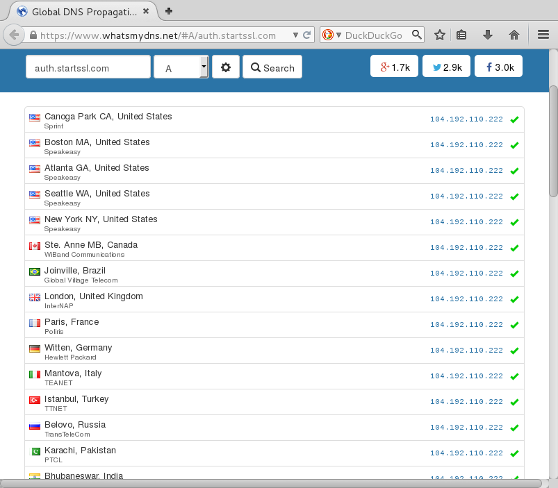
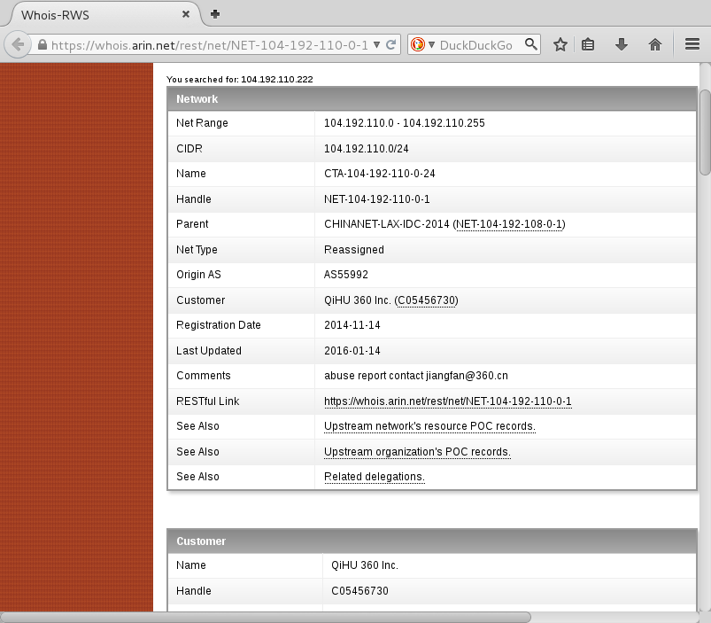

StartSSL is PKI solution from StartCom, a company based in Israel.
From https://en.wikipedia.org/wiki/StartCom:
StartSSL offers the free (for personal use) Class 1 X.509 SSL certificate "StartSSL Free", which works for webservers (SSL/TLS) as well as for E-mail encryption (S/MIME). It also offers Class 2 and 3 certificates as well as Extended Validation Certificates. All major browsers include support for StartSSL certificates.
From https://www.startssl.com/NewsDetails:
StartCom, a leading global Certificate Authority (CA) and provider of trusted identity and authentication services, launched its newly designed website just at the end of the year and announces expansion if its activities in China.
StartSSL uses https://auth.startssl.com/ for the front-end to access to their PKIs (login to the PKI, create, revoke certificates...). It's the Core of their service and the critical part of their infrastructure.
Using Robtex, we discover the platform of StartSSL is mainly operated in Israel with the 192.116.242.0/24 IP range (netname: SrartCom-Ltd(sic!), with country: IL).
From https://www.robtex.com/route/192.116.242.0-24.html:

The www.startssl.com vhost is provided by a custom CDN:
root@kali:~/# host www.startssl.com
www.startssl.com has address 97.74.232.97 <- Godaddy
www.startssl.com has address 52.7.55.170 <- Amazon Web Services
www.startssl.com has address 52.21.57.183 <- Amazon Web Services
www.startssl.com has address 52.0.114.134 <- Amazon Web Services
www.startssl.com has address 50.62.56.98 <- Godaddy
www.startssl.com has address 104.192.110.222 <- QiHU 360 Inc.
www.startssl.com has address 50.62.133.237 <- Godaddy
root@kali:~/#
Apart from IPs from CDNs, we find a strange fact:
The DNS of auth.startssl.com changed in December 2015 from 192.116.242.27 (StrartCom-Ltd) to 104.192.110.222 (QiHU 360), which belongs to a Chinese Company (Qihoo 360).
There are only 3 vhosts pointing to 104.192.110.222 :
www.startssl.com resolves for 1 IP to 104.192.110.222
auth.startssl.com -> 104.192.110.222
www.startpki.com -> 104.192.110.222
We can use WhatsMyDNS to check that auth.startssl.com revolves to 104.192.110.222 from any location. This is not a CDN solution but an intentional usage of a single Chinese IP.

From https://whois.arin.net/rest/net/NET-104-192-110-0-1/pft?s=104.192.110.222:

As auth.startssl.com revolves to 104.192.110.222 from any location, we can assume the PKI is now hosted on the 104.192.110.222 IP.
104.192.110.222 is an IP from "QiHU 360 Inc", which actually means Qihoo 360. Qihoo 360 is a Chinese tech company.
You may have heard something about Qihoo 360, who just bought Opera. Strangely enough, Qihoo 360 uses IPs from China Telecom Americas. China Telecom Americas is a subsidiary of China Telecom Corporation Limited which is a Chinese state-owned telecommunication company. It is the largest fixed-line service and the third largest mobile telecommunication provider in the People's Republic of China.
It is worrying that the PKI front-end (auth.startssl.com) is now hosted within a Chinese Antivirus Company, who have been using a Chinese ISP for 2 months AND that there hasn't been any news around. It can be only linked to the expansion of StartSSL's activities in China in December 2015, as explained above.
From a history point of view, StartSSL already refused to revoke certificates affected by the HeartBleed vulnerability and accused the user from negligence ("your software was vulnerable").
With all these facts, I don't think using StartSSL is a good idea now, except if they offer a clear explanation why they are hosting their PKI in a Chinese company.
Go use Let's encrypt ! :)
published on 2016-02-16 00:00:00 by Pierre Kim <pierre.kim.sec@gmail.com>